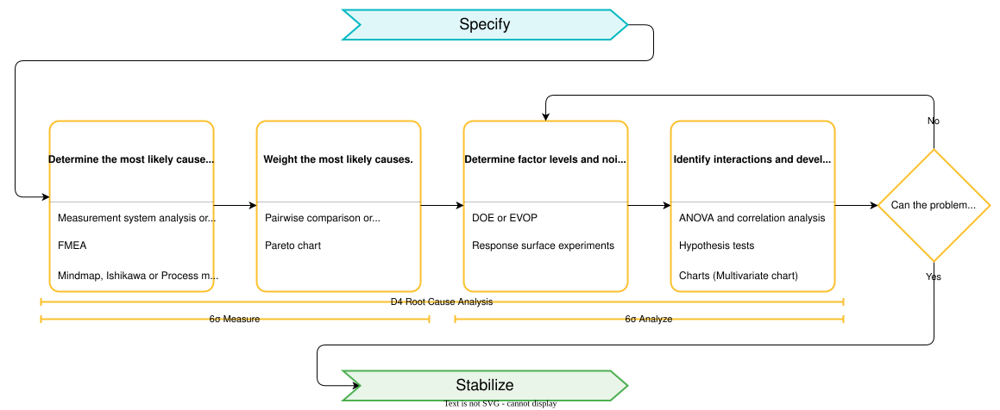

Scrutinize
Welcome to the investigative heart of the 3S methodology! This is where you put on your detective hat and dig deep into what's really causing your problem. No more guessing, no more "it's probably this" – we're going full CSI on your process.

Think of this phase as your chance to transform from someone who thinks they know what's wrong to someone who can prove what's wrong with hard data and statistical evidence.
What Makes Scrutinize Special?
This isn't your typical troubleshooting session where you try one thing after another hoping something works. The Scrutinize phase is all about:
- Systematic investigation using proven root cause analysis techniques
- Data-driven conclusions backed by statistical evidence
- Interaction hunting to find those sneaky hidden relationships that throw everyone off
- Hypothesis testing that separates facts from wishful thinking
Why Most Problem-Solving Fails (And How We Fix It)
Ever notice how the "obvious" solution often doesn't work? That's because most problems have hidden interactions between factors. What works perfectly under one set of conditions fails miserably under another.
For example:
- A temperature setting that's perfect in winter might cause chaos in summer
- A process adjustment that works great for experienced operators might confuse new ones
- A supplier change that improves one quality measure might secretly degrade another
This is exactly why we need the systematic approach of the Scrutinize phase – to uncover these hidden relationships before they bite us.
Your Detective Toolkit: Four Key Investigation Steps
1. Brainstorm All the Suspects (Root Cause Identification)
First things first: you need to round up all the usual suspects. This isn't about jumping to conclusions – it's about systematically considering every possible culprit.
The Classic Fishbone Diagram (Your Best Friend)
The Ishikawa diagram is like a systematic way to make sure you don't miss any obvious causes. Think of it as your investigation checklist:
- Machine: Equipment issues, calibration problems, wear and tear
- Method: Procedures, work instructions, training gaps
- Material: Raw material variation, supplier changes, storage conditions
- Man/People: Skill levels, training, motivation, fatigue
- Environment: Temperature, humidity, vibration, cleanliness
- Measurement: Gauge accuracy, measurement procedures, data quality
Let's see how to organize this data with DaSPi:
import daspi as dsp
import pandas as pd
# Build your suspect database
suspects = {
'Category': ['Machine', 'Machine', 'Material', 'Method', 'Environment', 'People'],
'Potential_Cause': [
'Calibration drift',
'Tool wear',
'Raw material variation',
'Procedure not followed',
'Temperature fluctuation',
'Operator experience'
],
'Evidence_Available': ['Yes', 'Yes', 'Yes', 'No', 'Yes', 'Partial'],
'Impact_Score': [8, 6, 7, 9, 5, 7],
'Likelihood_Score': [7, 8, 6, 4, 6, 8]
}
suspects_df = pd.DataFrame(suspects)
suspects_df['Priority'] = suspects_df['Impact_Score'] * suspects_df['Likelihood_Score']
# Sort by priority to focus on the most likely culprits first
print("Your Top Suspects (Ranked by Priority):")
print(suspects_df.sort_values('Priority', ascending=False))
Process Mapping: Following the Crime Scene
Sometimes you need to walk through the scene step by step. Process mapping helps you identify exactly where things can go wrong:
# Example: Manufacturing process steps
process_steps = {
'Step': [1, 2, 3, 4, 5],
'Process': ['Material prep', 'Setup', 'Processing', 'Inspection', 'Packaging'],
'Failure_Risk': ['Medium', 'High', 'High', 'Medium', 'Low'],
'Control_Method': ['Visual check', 'Calibration', 'SPC', 'Measurement', 'Count check']
}
process_df = pd.DataFrame(process_steps)
print("\nProcess Risk Assessment:")
print(process_df)
2. Build Your Case with Data (Cause Prioritization)
Now that you have your list of suspects, you need to figure out which ones are worth investigating first. This is where data becomes your best friend.
The 80/20 Rule for Root Causes
Just like in real detective work, not all leads are created equal. Let's use DaSPi to create a Pareto analysis:
# Example: Quality defect analysis
defect_data = {
'Defect_Type': ['Surface scratches', 'Dimension out of spec', 'Color variation',
'Missing components', 'Contamination', 'Other'],
'Frequency': [145, 89, 67, 34, 28, 12],
'Cost_Impact': [2.50, 15.00, 1.80, 45.00, 8.50, 3.20]
}
df = pd.DataFrame(defect_data)
df['Total_Impact'] = df['Frequency'] * df['Cost_Impact']
# Create a proper Pareto chart with DaSPi
chart = dsp.SingleChart(
source=df.sort_values('Total_Impact', ascending=False),
target='Total_Impact',
feature='Defect_Type'
).plot(
dsp.Bar
).plot(
dsp.Pareto # This will add the cumulative percentage line
).label(
fig_title='Root Cause Priority Analysis',
target_label='Total Impact ($)',
feature_label='Defect Types',
info='Focus on the vital few causes that drive 80% of the impact'
)
Risk Priority Matrix
Sometimes you need to balance likelihood against impact. Here's how to create a risk matrix:
# Create a risk assessment matrix
risk_data = {
'Cause': ['Tool wear', 'Operator error', 'Material variation', 'Temperature drift'],
'Likelihood': [8, 6, 5, 7], # Scale 1-10
'Impact': [7, 9, 6, 5], # Scale 1-10
'Detection': [6, 3, 8, 4] # How easy to detect (1=hard, 10=easy)
}
risk_df = pd.DataFrame(risk_data)
risk_df['RPN'] = risk_df['Likelihood'] * risk_df['Impact'] * (11 - risk_df['Detection'])
# Visualize with a scatter plot
chart = dsp.SingleChart(
source=risk_df,
target='Impact',
feature='Likelihood',
size='RPN' # Bubble size represents Risk Priority Number
).plot(
dsp.Scatter
).label(
fig_title='Risk Priority Matrix',
target_label='Impact (1-10)',
feature_label='Likelihood (1-10)',
info='Larger bubbles = higher risk priority'
)
import numpy as np
from scipy import stats
# Example: Pairwise comparison matrix
causes = ['Calibration', 'Temperature', 'Material_quality', 'Operator_skill']
n_causes = len(causes)
# Create comparison matrix (example values)
comparison_matrix = np.array([
[1, 3, 2, 4], # Calibration vs others
[1/3, 1, 1/2, 2], # Temperature vs others
[1/2, 2, 1, 3], # Material vs others
[1/4, 1/2, 1/3, 1] # Operator vs others
])
# Calculate priority weights (simplified eigenvalue method)
weights = np.mean(comparison_matrix / np.sum(comparison_matrix, axis=0), axis=1)
priority_df = pd.DataFrame({
'Cause': causes,
'Weight': weights,
'Rank': stats.rankdata(-weights)
})
print(priority_df.sort_values('Rank'))
Cause & Effect Matrix
Link causes to customer requirements:
# Example: C&E Matrix analysis
requirements = ['Quality', 'Cost', 'Delivery']
requirement_weights = [9, 7, 5] # Importance ratings
ce_matrix = pd.DataFrame({
'Cause': causes,
'Quality_Impact': [9, 7, 8, 6],
'Cost_Impact': [6, 4, 7, 5],
'Delivery_Impact': [3, 2, 4, 8]
})
# Calculate weighted scores
for i, req in enumerate(requirements):
col_name = f'{req}_Impact'
ce_matrix[f'{req}_Weighted'] = ce_matrix[col_name] * requirement_weights[i]
ce_matrix['Total_Score'] = (ce_matrix['Quality_Weighted'] +
ce_matrix['Cost_Weighted'] +
ce_matrix['Delivery_Weighted'])
print(ce_matrix[['Cause', 'Total_Score']].sort_values('Total_Score', ascending=False))
Pareto Analysis
Visualize the vital few causes:
import matplotlib.pyplot as plt
# Create Pareto chart
fig, (ax1, ax2) = plt.subplots(1, 2, figsize=(12, 5))
# Pareto chart of causes
sorted_data = ce_matrix.sort_values('Total_Score', ascending=False)
cumulative_pct = np.cumsum(sorted_data['Total_Score']) / sorted_data['Total_Score'].sum() * 100
ax1.bar(sorted_data['Cause'], sorted_data['Total_Score'], alpha=0.7)
ax1.set_ylabel('Impact Score')
ax1.set_title('Cause Impact Analysis')
ax1.tick_params(axis='x', rotation=45)
# Cumulative percentage line
ax1_twin = ax1.twinx()
ax1_twin.plot(sorted_data['Cause'], cumulative_pct, 'ro-', color='red')
ax1_twin.axhline(y=80, color='red', linestyle='--', alpha=0.7, label='80% Line')
ax1_twin.set_ylabel('Cumulative %')
ax1_twin.set_ylim(0, 100)
plt.tight_layout()
plt.show()
3. Time to Get Experimental (Design of Experiments)
This is where the magic happens. Instead of changing one thing at a time and hoping for the best, we're going to be smart about it. DOE helps you uncover those sneaky interactions we talked about.
Starting Simple: One Factor at a Time?
Don't do this! Here's why the traditional "one factor at a time" approach fails:
# Traditional approach (WRONG!)
# Week 1: Change temperature only
# Week 2: Change pressure only
# Week 3: Change time only
# Result: Miss the interaction between temperature and pressure!
# Let's see what happens with a real example
import numpy as np
# Simulate a process where temperature and pressure interact
def process_yield(temp, pressure):
# Hidden interaction: high temp + high pressure = problems!
base_yield = 85
temp_effect = (temp - 100) * 0.2
pressure_effect = (pressure - 3) * 2
interaction_effect = -0.1 * (temp - 100) * (pressure - 3) # This is what OFAT misses!
return base_yield + temp_effect + pressure_effect + interaction_effect
# OFAT would test these one at a time and miss the interaction
print("One Factor at a Time Results:")
print(f"Baseline (100°C, 3 bar): {process_yield(100, 3):.1f}%")
print(f"Higher temp (110°C, 3 bar): {process_yield(110, 3):.1f}%")
print(f"Higher pressure (100°C, 4 bar): {process_yield(100, 4):.1f}%")
print(f"Both high (110°C, 4 bar): {process_yield(110, 4):.1f}% <- Surprise!")
The Smart Way: Factorial Design with DaSPi
Let's build a proper experiment that catches interactions:
# Create a 2-factor factorial design
factors = dsp.Factor.build({
'Temperature': [95, 105],
'Pressure': [2.5, 3.5],
'Time': [25, 35]
})
# Build a full factorial design
design = dsp.FullFactorialDesignBuilder(factors).build()
print("Smart Experimental Design:")
print(design.head())
# Run the experiment (simulated results)
np.random.seed(42) # For reproducible results
design['Yield'] = [process_yield(row['Temperature'], row['Pressure']) +
np.random.normal(0, 1) for _, row in design.iterrows()]
print("\nExperimental Results:")
print(design)
Analyzing Your Results with ANOVA
Now comes the exciting part – finding out what really matters:
# Build a linear model to analyze the results
model = dsp.LinearModel(
source=design,
target='Yield',
features=['Temperature', 'Pressure', 'Time'],
order=2 # Include interactions
)
print("ANOVA Results:")
print(model.anova_table())
# Check which effects are significant
significant_effects = model.anova_table()[model.anova_table()['P'] < 0.05]
print(f"\nSignificant Effects (p < 0.05):")
print(significant_effects[['SS', 'F', 'P']])
# Create residual plots to validate the model
residual_charts = dsp.ResidualsCharts(model)
residual_charts.plot().label(
fig_title='Model Validation',
info='Check for patterns in residuals'
)
4. Testing Your Theories (Hypothesis Testing)
Time to put your theories to the test! Hypothesis testing is like being a judge in court – you need evidence beyond reasonable doubt.
Setting Up Your Case
Before you start, you need to establish your ground rules:
# Let's say you suspect temperature affects yield
# H0: Temperature has NO effect on yield (null hypothesis)
# H1: Temperature DOES affect yield (alternative hypothesis)
# Your threshold for "beyond reasonable doubt"
alpha = 0.05 # 5% chance you're wrong if you reject H0
print("Setting up our hypothesis test:")
print(f"Significance level (α): {alpha}")
print("H0: Temperature coefficient = 0 (no effect)")
print("H1: Temperature coefficient ≠ 0 (has effect)")
The t-test: Is This Effect Real?
Let's test if that temperature effect we found is statistically significant:
# Extract the temperature coefficient from our model
temp_coeff = model.coefficients['Temperature']
temp_std_error = model.standard_errors['Temperature']
temp_t_stat = temp_coeff / temp_std_error
# Calculate degrees of freedom
df = len(design) - len(model.coefficients)
# Get the p-value (probability of seeing this result by chance)
from scipy.stats import t
p_value = 2 * (1 - t.cdf(abs(temp_t_stat), df))
print("Temperature Effect Analysis:")
print(f"Coefficient: {temp_coeff:.3f}")
print(f"Standard Error: {temp_std_error:.3f}")
print(f"t-statistic: {temp_t_stat:.3f}")
print(f"p-value: {p_value:.6f}")
# Make your decision
if p_value < alpha:
print(f"🎯 SIGNIFICANT! Temperature really does affect yield (p < {alpha})")
else:
print(f"🤷 Not significant. Could just be random variation (p ≥ {alpha})")
Confidence Intervals: How Sure Are We?
Instead of just "yes/no", let's see the range of possible effects:
# Calculate 95% confidence interval for temperature effect
confidence_level = 0.95
t_critical = t.ppf((1 + confidence_level) / 2, df)
margin_of_error = t_critical * temp_std_error
ci_lower = temp_coeff - margin_of_error
ci_upper = temp_coeff + margin_of_error
print(f"\n95% Confidence Interval for Temperature Effect:")
print(f"Range: [{ci_lower:.3f}, {ci_upper:.3f}]")
if ci_lower > 0 and ci_upper > 0:
print("🔥 Temperature definitely increases yield!")
elif ci_lower < 0 and ci_upper < 0:
print("❄️ Temperature definitely decreases yield!")
else:
print("🤔 Effect could go either way - not conclusive")
Multiple Comparisons: Don't Get Fooled
When testing multiple factors, you need to be extra careful:
# Bonferroni correction for multiple testing
num_tests = len(model.coefficients) - 1 # Exclude intercept
adjusted_alpha = alpha / num_tests
print(f"\nMultiple Testing Correction:")
print(f"Original α: {alpha}")
print(f"Number of tests: {num_tests}")
print(f"Bonferroni-adjusted α: {adjusted_alpha:.4f}")
# Re-evaluate significance with adjusted threshold
significant_factors = []
for factor, p_val in model.p_values.items():
if factor != 'Intercept' and p_val < adjusted_alpha:
significant_factors.append(factor)
print(f"Significant factors after correction: {significant_factors}")
Wrapping Up Your Investigation
By now, you should have:
- Identified root causes using systematic tools like fishbone diagrams and data analysis
- Prioritized the most impactful causes using Pareto analysis and risk assessment
- Designed smart experiments that reveal interactions and optimize multiple factors
- Tested your theories with proper statistical rigor
Remember: The goal isn't to find THE perfect answer, but to narrow down the field to the most promising candidates. In the next phase (Stabilize), we'll implement solutions for these verified root causes.
Pro tip: Document everything! Your future self (and your colleagues) will thank you when similar problems pop up later.
Ready to move on? Check out the Stabilize phase to learn how to implement and monitor your solutions.### 4. Hypothesis Testing and Validation
Objective: Use statistical methods to prove cause-and-effect relationships.
ANOVA (Analysis of Variance)
Test for significant differences between factor levels:
import daspi as dsp
from scipy import stats
# Example: One-way ANOVA
group1 = np.random.normal(100, 5, 30) # Control
group2 = np.random.normal(105, 5, 30) # Treatment A
group3 = np.random.normal(98, 5, 30) # Treatment B
# Perform ANOVA
f_stat, p_value = stats.f_oneway(group1, group2, group3)
print(f"F-statistic: {f_stat:.3f}")
print(f"p-value: {p_value:.3f}")
if p_value < 0.05:
print("Significant difference detected between groups")
# Post-hoc analysis
from scipy.stats import tukey_hsd
result = tukey_hsd(group1, group2, group3)
print(result)
Correlation Analysis
Identify linear relationships between variables:
# Example: Correlation analysis
np.random.seed(42)
x = np.random.normal(0, 1, 100)
y = 2 * x + np.random.normal(0, 0.5, 100) # Strong correlation
z = np.random.normal(0, 1, 100) # No correlation
correlation_data = pd.DataFrame({'X': x, 'Y': y, 'Z': z})
correlation_matrix = correlation_data.corr()
print("Correlation Matrix:")
print(correlation_matrix.round(3))
# Test significance
from scipy.stats import pearsonr
r_xy, p_xy = pearsonr(x, y)
print(f"\nX-Y Correlation: r={r_xy:.3f}, p={p_xy:.3f}")
Regression Analysis
Quantify relationships and predict outcomes:
from sklearn.linear_model import LinearRegression
from sklearn.metrics import r2_score
# Multiple regression example
X = correlation_data[['X', 'Z']]
y = correlation_data['Y']
model = LinearRegression().fit(X, y)
y_pred = model.predict(X)
r2 = r2_score(y, y_pred)
print(f"R-squared: {r2:.3f}")
print(f"Coefficients: {model.coef_}")
print(f"Intercept: {model.intercept_:.3f}")
Multivariate Analysis
For complex interactions and multiple responses:
# Example: Principal Component Analysis
from sklearn.decomposition import PCA
from sklearn.preprocessing import StandardScaler
# Simulate multivariate data
process_data = pd.DataFrame({
'Temperature': np.random.normal(100, 10, 200),
'Pressure': np.random.normal(50, 5, 200),
'Flow_Rate': np.random.normal(25, 3, 200),
'Humidity': np.random.normal(60, 8, 200)
})
# Standardize and perform PCA
scaler = StandardScaler()
scaled_data = scaler.fit_transform(process_data)
pca = PCA()
pca_result = pca.fit_transform(scaled_data)
print("Explained Variance Ratio:")
for i, ratio in enumerate(pca.explained_variance_ratio_):
print(f"PC{i+1}: {ratio:.3f}")
Decision Point: Can Problem Be Demonstrably Solved?
At the end of the Scrutinize phase, evaluate whether sufficient evidence exists:
✅ Yes → Proceed to Stabilize Phase
- Root causes are identified and validated
- Statistical evidence supports cause-and-effect relationships
- Confidence in solution approach is high
❌ No → Return to Experimentation
- Conduct additional experiments
- Explore alternative hypotheses
- Consider different experimental designs
Tools and Techniques Summary
Essential Tools for Scrutinize Phase
| Tool | Purpose | Best Used When |
|---|---|---|
| Ishikawa Diagram | Systematic cause identification | Starting root cause analysis |
| Pairwise Comparison | Objective cause prioritization | Multiple competing causes |
| DOE | Validate cause-and-effect | Controllable factors exist |
| ANOVA | Test statistical significance | Comparing multiple groups |
| Regression | Quantify relationships | Continuous variables |
| Multivariate Analysis | Complex interactions | Many variables involved |
DaSPi Library Support
The DaSPi library provides comprehensive tools for the Scrutinize phase:
import daspi as dsp
# Statistical testing
result = dsp.hypothesis_test(data1, data2, test_type='t_test')
# ANOVA analysis
anova_result = dsp.anova_analysis(data, factors=['A', 'B', 'C'])
# Process capability
capability = dsp.ProcessEstimator(samples=data, spec_limits=limits)
# Correlation analysis
correlations = dsp.correlation_matrix(dataframe)
# Visualization
dsp.pareto_chart(causes, impacts)
dsp.scatter_plot_matrix(variables)
Common Challenges and Solutions
Challenge 1: Too Many Potential Causes
Solution:
- Use structured prioritization methods
- Focus on causes with highest impact and likelihood
- Apply the 80/20 rule to identify vital few causes
Challenge 2: Limited Data for Analysis
Solution:
- Design efficient experiments with maximum information
- Use historical data and process knowledge
- Consider observational studies when experiments are not feasible
Challenge 3: Complex Interactions
Solution:
- Use factorial designs to study interactions
- Apply multivariate analysis techniques
- Break complex problems into smaller, manageable parts
Next Steps
Once root causes are validated and evidence is compelling:
🔄 Proceed to Stabilize Phase to develop and implement solutions
The thorough investigation completed in the Scrutinize phase provides the foundation for effective solution development and implementation.
Phase Complete! You have successfully identified and validated the root causes of the problem. The team now has solid evidence to guide solution development in the Stabilize phase.